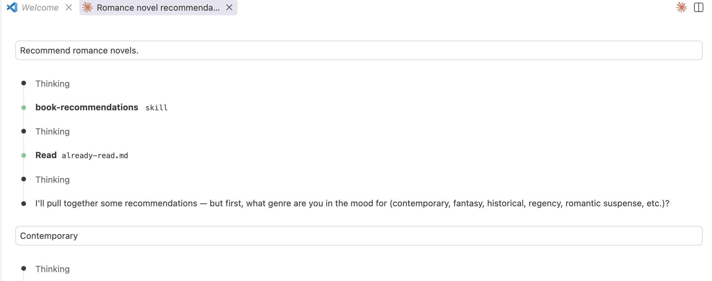
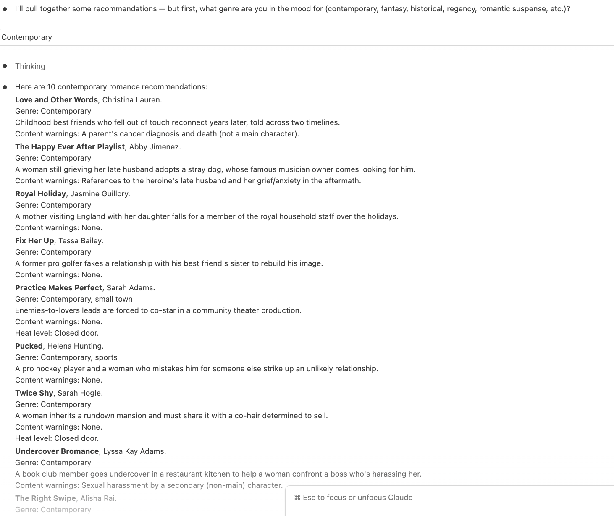
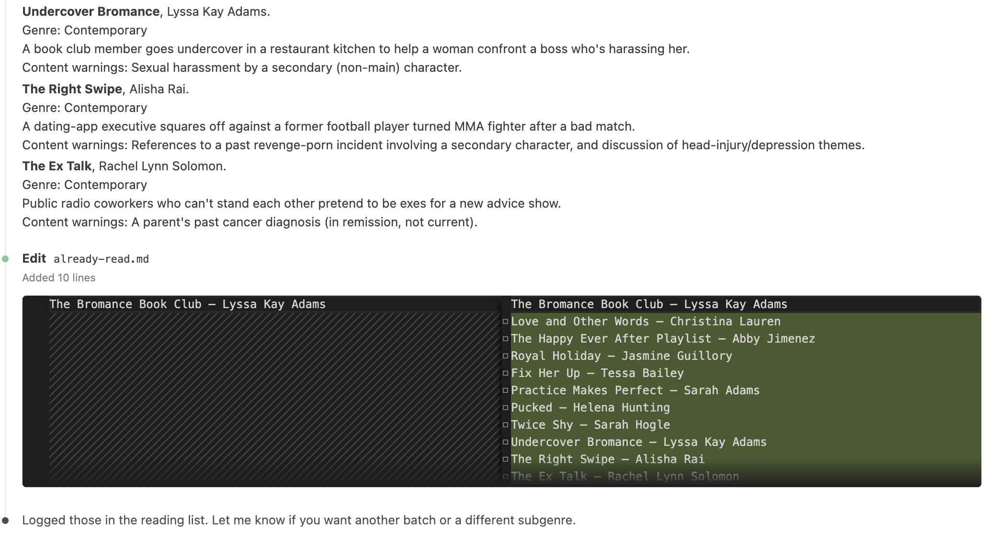

Book Recommendations Skill
This project is about writing an unambiguous spec for an LLM, debugging it the way you'd debug conflicting requirements in any spec, and then building a rubric to check whether the model's output actually satisfies it. The example I used to practice this is a personal one: a Claude Code skill that recommends romance novels within a specific, fairly strict set of rules.
The Problem
Before I built the skill, Claude was giving me recommendations of authors I disliked, repeating authors in the list, and including books I had read already. There were often not enough recommendations, so I had to keep editing my prompt by hand every time.
What I Built
A written skill (SKILL.md) that encodes my preferences as rules: genre and content exclusions, an author exclusion list, a strict output format with content warnings, and a running record of books I've already been recommended so they aren't repeated. It returns 15 recommendations at a time, in my preferred format, without ever explaining what it filtered out or why.
Screenshots
Here is what that looks like:



How I Built It
I wrote SKILL.md in VS Code and tested it iteratively with Claude Code, running the skill, reading the output against my own rules, and editing the instructions when the output didn't match what I'd specified. Once the skill was stable, I wrote a scoring rubric with pass/fail/unverifiable criteria (real/attributed titles, no duplicate authors, content-warning coverage and format, and so on) and ran a full scored eval pass against a real set of output, logged in the eval run linked above.
Challenges
In the first round of testing, I had two instruction defects. First, a missing closing "---" that would have broken the file. Second, a sentence that contradicted itself (it said no children but also allowed for children in the epilogue).
In the second round, the list of books I didn't want recommended had grown too large to keep inline — it would have made the skill file too long to read easily. I moved it into a separate file (called do-not-recommend.md at the time), which is a progressive-disclosure fix: the exclusion list only loads when the skill actually runs, instead of bloating the instructions Claude reads every time.
In the third round, I found a state-persistence limitation in the model. Results still included books I had already read that hadn't made it into that file yet. I edited the skill to add every recommendation to the "do not recommend" list immediately after recommending it, rather than relying on me to update it separately. That means the file also holds books that were only recommended, not necessarily read, so I later renamed it do-not-recommend.md.
How I Evaluated It
Passing my own read-through isn't the same as verifying the output against a fixed standard, so I wrote a 12-criterion rubric (17 now, see below) and scored a real run against it (see the eval run above). Several results from that pass stood out more than a clean scorecard would have:
- A hallucination that the first score hid. The model's draft attributed "The Suite Spot" to the wrong author. Claude checked all 15 titles and authors against publisher pages, Goodreads, and reviews in-session, and I spot-checked a subset by hand — the manual spot-check is what actually caught the misattribution. I corrected the entry before delivering the list, which meant the attribution criterion scored a clean pass: the rubric had graded the corrected output, not what the model produced. I fixed the rubric so it grades what the model actually produced — a caught-and-fixed error still fails that criterion for the run — and rescored Run 1 accordingly.
- A defect in the rubric itself. My first rubric only had pass and fail, which meant a criterion nobody could actually verify (like heat level, which isn't reliably documented anywhere outside the book's text) silently resolved to "pass." I added "unverifiable" as a distinct, separately counted outcome so the rubric reports what's actually known rather than defaulting unknowns to clean.
- A same-session blind spot, caught by a separate grader. I had an independent agent regrade Run 1 with only the rubric, the exclusion file, and the raw output — no SKILL.md, no prior grading, no case study. It caught a real defect that two rounds of same-session grading had both missed: in Life's Too Short, the main character becomes her niece's guardian mid-book, which the pregnancy/child rule explicitly forbids before the epilogue. It also exposed a wording gap: the skill appends every recommendation to do-not-recommend.md right after delivering it, so a grader without a snapshot of that file from before the run will always see this run's own titles sitting in it and misgrade the exclusion criterion as a fail. I fixed the rubric's wording so it grades against the file as it stood before the run.
- A rule the rubric enforced that the skill never stated. The regrade's guardianship catch worked because the rubric already checked for it — but SKILL.md's own rule only mentioned "a child or pregnancy," never guardianship. The two documents disagreed about what the rule actually was. I added guardianship to SKILL.md directly, so the instruction and the rubric now state the same rule instead of the rubric silently covering a gap the instruction left open.
- A note that leaked the thing it was supposed to hide. Six of Run 1's fifteen entries carried "Note: this author has other books that qualify." The word "qualify" implies a pass/fail filter exists, which conflicts with the skill's own rule that the exclusion process stay invisible — the reader should never learn that anything was screened. I cut the instruction and its note from the skill entirely, closing the open question the regrade had raised without resolving.
- Genre scope disagreed across files, and the fallback didn't exist. The README described the skill as covering contemporary and fantasy romance; SKILL.md's own genre list is wider (contemporary, fantasy, historical, regency, romantic suspense). Run 2 recommended a historical title, which the README's narrower description wouldn't have covered — I synced the README to match SKILL.md. Separately, SKILL.md's instruction to ask the user for a genre assumes a live conversation always exists. Run 2 had no user turn to ask, so it silently mixed genres with no rule telling it what to do. I added a fallback: default to contemporary, and state that a default was applied, whenever there's no one to ask.
- Five rules in SKILL.md had no rubric criterion. I checked the rubric against SKILL.md rule by rule. Most rules had a matching criterion. The rubric had no check for main characters under 18, high school settings and YA; the man-and-woman rule; main characters who molest, stalk, or kidnap (it covered only rape, torture, and murder); value judgments about content; or the default-genre statement. I added them as criteria 13 to 17. The rubric's murder clause needed no change, because SKILL.md covers it through "no criminal main characters." Runs 1 and 2 were graded on criteria 1 to 12 only, so they don't test the new ones.
Run 2
After the fixes above, I ran the skill a second time (see the second eval run above). Before the list was finalized, I rejected 8 candidates during vetting, for reasons such as a main character who kidnaps or tortures another character, a main character with a child, and a book credited to the wrong author on the first guess. Because those errors were caught before any output existed, none of them counts against the score.
Run 2 scored 10 pass, 0 fail, 2 unverifiable (of 12 criteria). Two limits apply:
- I graded it in the same session that produced it, so the grader had the skill loaded. Same-session grading missed a real failure twice in Run 1, so this score has not been independently confirmed.
- It ran against SKILL.md as it stood before the 2026-09-12 edits, so it does not test the genre fallback, the guardianship rule, or the removal of the "other books that qualify" note.
Scores
| Run | Pass | Fail | Unverifiable | Graded by |
|---|---|---|---|---|
| Run 1 | 8 | 2 | 2 | Same session, then an independent regrade |
| Run 2 | 10 | 0 | 2 | Same session only |
Both runs were graded on criteria 1 to 12. Criteria 9 (content-warning coverage) and 10 (heat level) stay unverifiable in both runs, because they need the book text and review sites don't settle them.
Future Improvements
Still open:
- Regrade Run 2 with an independent session that sees only the rubric, the exclusion file and the raw output. Same-session grading missed a real failure in Run 1, so this is a standing step for every run.
- Run the skill again against the current SKILL.md and grade it on all 17 criteria, so the 2026-09-12 fixes and criteria 13 to 17 are tested.
- Decide how to handle criteria 9 and 10. I could check them against the book text, or accept "unverifiable" and say so.
- Decide whether the book summary in each entry is necessary at all.